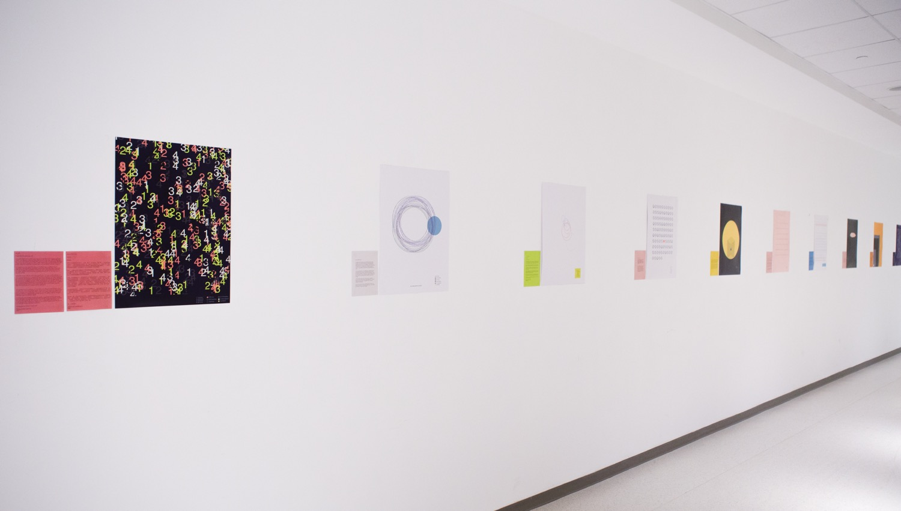

Love Letters | New York University Shanghai Interactive Media Arts Undergraduate Capstone Project
Individual Work
Toolkit // P5.JS
Location // Interactive Media Arts, New York University Shanghai
Time // 2018 Spring 4 month
Project Description
Love Letters is a series of graphic design prints made in computer programs from ten anonymous love letters I collected from the Internet. The design principles followed the results of sentimental analysis(IBM Tone Analyzer) and color studies as guidelines. Each graphic visualizes the underlying emotions conveyed by the texts and represents the letters in their own unique ways. Some by word counts, some by voice waves, some by semantics, and some by the tones of the Chinese characters, exploring the various visual forms of translating and re-presenting texts.
This project is made for my Interactive Media Arts major undergraduate capstone. I'm interested in visual storytelling and making connections between people, and this is the opportunity for me to ask questions such as "how do machine possibly understand and convey human emotions?", and "how to create compelling analog experience with technology?" through my art experiments.
About the Letters
In April 2018, I sent out an online survey, opened an email address lovelettersvisual@gmail.com and asked people to send me what they want to tell their loved ones but never started writing. The receivers can be a person, a city, and can be an unforgettable experience.
What do we mean when we talk about love?
Unrequited love. Failed romance. The people we never belonged to. The dreams we were obsessed with. One of the initial purposes of this project is offering people an opportunity to let go their long-suppressed feelings. Love can be one way, can be bittersweet, and even can be traumatizing. Love is appreciation, romanticization, frustration, desperation, and is an inseparable part throughout our personal growth. What matters is not what we get in return, but the echoing voices in our heart.
Project Preview
I am working on a website that ables to run code and present the letters live. Following is some graphic examples from the final design.
The project was exhibited as part of 2019 Spring IMA End of Semester Show in Shanghai, China.


---TBC---